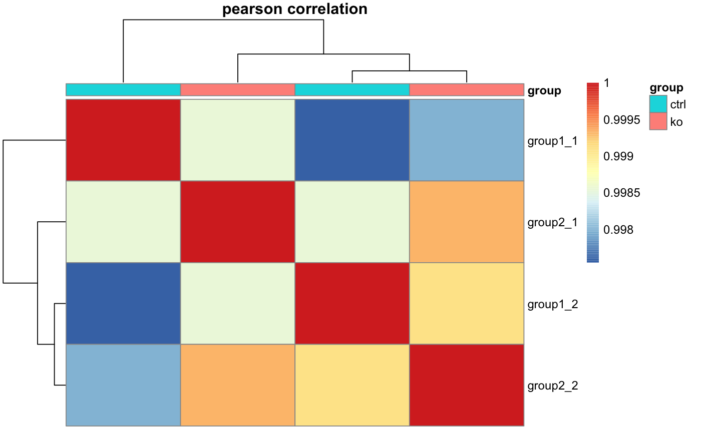

This function calculates a correlation matrix based on gene expression per
sample. By default, this function processes all gene counts per sample to
calculate the corrlation matrix. This behavior can be overrided with the
input of gene identifier vector. In this case, only the expression of the
desired genes will be used to calculate the correlation matrix.
plot_correlation_heatmap(object, ...) # S4 method for bcbioRNADataSet plot_correlation_heatmap(object, transform = "rlog", method = "pearson", clustering_method = "ward.D2", genes = NULL, samples = NULL, interesting_groups = NULL, annotation = NULL, title = NULL, ...)
| object | Object. |
|---|---|
| ... | Additional arguments, passed to |
| transform | String specifying |
| method | Correlation coefficient (or covariance) to be computed.
Defaults to |
| clustering_method | Hierarchical clustering method. Accepts the same
values as |
| genes | Optional. Character vector of specific gene identifiers to plot. |
| samples | Optional. Character vector of specific samples. |
| interesting_groups | Optional. Interesting groups to label with bars
above heatmap. If |
| annotation | Optional. Alternative annotation to use. Useful when plotting more than one column. |
| title | Optional. Text to include in plot title. |
pheatmap().
Other Heatmaps: plot_deg_heatmap,
plot_gene_heatmap
data(bcb) plot_correlation_heatmap(bcb)